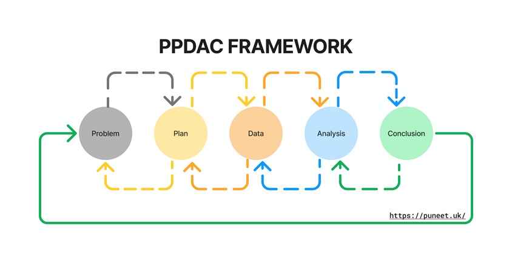

Understanding the PPDAC Framework
Version: 1.0.0
I have been reading, ‘The Art of Statistics: Learning from Data’ and came across the PPDAC framework fairly early on in the book. David Spiegelhalter, the author, is a big proponent of the framework. I have outlined it below with a view as a data leader.
What is PPDAC?
Having a structured framework in statistical analysis is important to help bring order to complex statistical analysis problems. It does this by bring clarity, a step-by-step approach, consistency, effective solutions aswell as documentation and communication.
The PPDAC framework was originally developed by R. J. MacKay and R. W. Oldford. The framework is useful for teaching people about statistical literacy and data-driven problem solving.
Problem
Define the problem you are trying to solve.
Questions to help define the problem:
- What is the problem?
- What answer are you trying to get to?
- Why is this problem important?
- What is scope of the problem?
- Do you understand the problem?
- Do you have the data to solve the problem?
- Do you have the data-literacy in the team?
Plan
Questions to help define the plan:
- What are you measuring?
- How will you measure it?
- What data do I need?
- Is the data set representative?
- What is the goal?
- What defines success?
Data
Data is the at the centre of any statistical or data science problem. Here you need to understand the collection, management, cleaning and preperation of the data you will need.
Questions to help understand the data:
- Do I have the data?
- How will I collect the data?
- Is is quaility data?
- What do I need to improve the data?
- Do I need to transform the data?
- Is this a one time analysis or will you need to build a pipeline?
Analysis
Here you will do data exploration, apply statistical techniques and interpret and visualise your data.
Questions to help with your analysis:
- What patterens can I see in the data?
- Have you tested for errors in the data and or analysis?
- What statistical methods should I use?
- How can I visualise the data effectively?
- Have I solved the problem?
Conclusion
The final step is to take your analysis and visulisations and communicate the answer to the problem to your stakeholders.
Some questions to consider at this stage:
- What are the key findings?
- Is it reproduceable?
- What are the implcations of the findings?
- What recomendations can I make?
- Do I need to revise the plan and do this again?
Conclusion
The PPDAC framework is an iterative process. Depending on the problem you are trying to solve and the data you have, you may need to iterate through the process multiple times. Whether the problem needs to be reassessed, the plan tweaked, or more and better data collected are just a few of the challenges that may arise. The key here is that it provides clarity and consistency, giving you a structure to deal with complex problems that allow you to drive data-driven decisions.